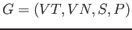
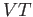
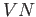
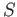
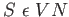
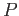
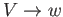
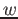
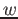

Introducción
Fco. Javier Bohórquez Ogalla
El proyecto OMI ofrece un conjunto de herramientas y recursos que ayudan en el aprendizaje
de la teoría de intérpretes y los lenguajes formales. OMI en si mismo es un intérprete desarrollado
con la finalidad de servir como caso práctico, aplicando los conceptos estudiados en
estos campos.
OMI es un intérprete modular, en el sentido de que su funcionalidad y características puede ser extendida mediante módulos.
OMI es código abierto y libre, por lo que puede ser utilizado, estudiado, modificado y/o redistribuido libremente.
El nombre OMI también hace referencia al lenguaje que es interpretado. Un lenguaje de programación de alto nivel, de tipado dinámico y de propósito general. Fundamentalmente
imperativo orientado a objetos, pero que además presenta características propias de otros paradigmas como de la programación funcional.
El proyecto OMI pretende facilitar el estudio de los sistemas intérpretes mediante la documentación y la interactividad. Abarcando no solo el diseño y el desarrollo
de uno de estos sistemas, si no el proceso de interpretación en si. De esta forma se presentan herramientas que permiten hacer uso del intérprete a la vez que ilustran
su funcionamiento.
La teoría de autómatas y los lenguajes formales son la base para la construcción de sistemas intérpretes. Muchos de los conceptos estudiados
en estos campos sirven para construir otras ramas de estudio como la teoría de intérpretes y compiladores.
Normalmente, por limitaciones de tiempo, los cursos académicos relacionados con el estudio de estos campos están enfocados a los conceptos teóricos.
Llevándose a cabo tan solo algunas prácticas que refuerzan el aprendizaje y ayudan a ver la aplicación real mediante casos sencillos y simplificados.
Sería de gran ayuda en este proceso disponer de un caso práctico completo, que ilustre cómo se define y construye un lenguaje de programación actual,
y que pueda ser consultado cuándo, dónde y por quién lo desee. OMI pretende ser una fuente de información que complemente el estudio práctico en estas áreas.
Aunque existen herramientas que dan soporte a la construcción de sistemas intérpretes, es difícil encontrar alguna que ayude a comprender cómo estos se construyen y funcionan.
Los intérpretes modernos no están enfocados en ilustrar la tarea que llevan a cabo, tienen como propósito ejecutar programas de forma óptima y efectiva. Sería de utilidad disponer de una
herramienta que documente los procesos sintácticos y semánticos llevados a cabo durante la interpretación de código fuente. OMI tiene como propósito generar información relativa al proceso
de interpretación que muestre el funcionamiento del intérprete.
La comunidad académica no solo precisa de un objeto de estudio, si no también de un objeto que ayude a formar la comunidad. El proyecto OMI pretende ser una base para crear una comunidad
centrada en el estudio de los lenguajes formales, en las que todos puedan contribuir a la vez de beneficiarse.
El proyecto OMI abarca una serie de herramientas y recursos que ayudan a comprender
cómo se construye y funciona un sistema intérprete.
El intérprete OMI es la parte fundamental del proyecto, las demás herramientas y recursos se valen o se construyen a partir de este.
El intérprete OMI es un sistema software capaz de analizar y ejecutar otros programas escritos en un lenguaje específico con el mismo nombre.
El intérprete puede procesar código fuente recibido mediante la entrada estándar. También es posible ejecutarlo como una terminal interactiva, mostrando un prompt
e interpretando el código introducido. Por otro lado podrá ser configurado para obtener el código fuente mediante un puerto TCP, funcionando así como un software
servidor.
El intérprete puede ser ejecutado de forma que produzca una salida en formato JSON relativa a acciones llevadas a cabo durante el proceso.
El software puede recibir una serie de parámetros que serán pasados como argumentos al programa.
El intérprete puede ser extendido mediante módulos lo que permite ampliar las posibilidades del lenguaje subyacente. Por otro lado el software
puede ser configurado desde el momento en el que es construido, de forma que puede prescindir y/o alterar algunas de sus características, adaptándose mejor
al uso concreto que se le fuera a dar.
OMI es un lenguaje multiparadigma de alto nivel y de propósito general, que presenta un tipado dinámico. Su sintaxis pretende
ser sencilla y similar a los lenguajes de programación modernos.
Contempla tipos de datos simples y compuestos, así como un conjunto de operaciones sobre estos. Los tipos de datos que pueden ser
manipulados por el intérprete OMI comprenden:
- Lógicos
- Aritméticos
- Cadena de caracteres
- Array de elementos
- Expresiones regulares
- Funciones
- Referencias
- Objetos
El intérprete OMI soporta variedad de operadores que trabajan sobre los tipos de datos indicados. Estos son aquellos que se pueden encontrar de forma
nativa en cualquier lenguaje de programación actual, a excepción de los operadores booleanos bit a bit. Esto incluye operadores tales como
la suma, la potencia, la negación, la concatenación, el ternario, fusión de nulos... Se dispone además de una serie de operadores para la entrada/salida de datos.
El lenguaje OMI permite al usuario asignar valores a símbolos variables, que pueden ser utilizados posteriormente en otras expresiones y construcciones del lenguaje. Las
variables pueden ser locales o globales.
El sistema intérprete es capaz de procesar estructuras de control tales como if, while, switch... Además presenta otras sentencias que operan sobre el flujo de ejecución,
como por ejemplo la inclusión de ficheros, la rotura de bloques, la continuación de bucle o la parada de la ejecución. También permite la definición de etiquetas y el salto a las mismas.
En OMI es posible definir y realizar llamadas a funciones. Estas pueden hacer uso de parámetros por defecto, y estos pueden
ser pasados por referencia o valor.
OMI es un lenguaje orientado a objetos. Permite la definición de clases y la instanciación de estas en objetos. Contempla algunas características
propias de este paradigma:
- Definición de métodos y atributos
- Método constructor
- Visibilidad pública y privada
- Herencia simple
- Métodos y atributos estáticos
- Enlace estático en tiempo de ejecución
- Métodos mágicos
- Duck typing
- Tipos de datos básicos como clase de objetos
OMI además presenta características propias de la programación funcional:
- Funciones de primer orden
- Clausura de funciones
- Decoradores
- Pliegues
- Aplicación parcial
- Funciones anónimas
- Listas por compresión
OMI es un lenguaje con mecanismos que favorecen la reflexión y permiten llevar a cabo introspección de tipos.
El lenguaje ofrece una serie de recursos en forma de funciones destinados a la gestión de:
OMI puede extender su funcionalidad y características mediante el uso de módulos. El proyecto OMI incluye
el desarrollo de uno de estos módulos y la documentación de este proceso.
El módulo gettext añade funciones para la internacionalización de programas. Implementa las funciones de la biblioteca de GNU
con el mismo nombre.
La biblioteca de desarrollo OMI incluye todos los recursos de programación necesarios para construir el intérprete.
Está escrita en C++, y se puede incluir en cualquier proyecto software escrito en este lenguaje.
Esta biblioteca puede ser instalada de forma independiente al intérprete, y puede ser usada para el desarrollo de
módulos o cualquier otro sistema software. Permite construir nodos semánticos a partir de los ya definidos e
interpretar código fuente escrito en OMI.
El proyecto OMI incluye un sitio web que sirve como presentación del mismo, además de como medio de acceso a la documentación
y el software desarrollado. Todas las páginas web pertenecientes al sitio contienen información relativa al proyecto y a las áreas que este
ocupa.
El sitio web OMI se compone de:
- Página de inicio:
- Describe e introduce brevemente el proyecto. Contiene enlaces a las demás secciones del sitio web. Además presenta un
listado de noticias y enlaces de descargas a la última versión del intérprete.
- Índice de documentación:
- Página que representa un índice de los documentos que conforman el proyecto.
- Documentos:
- Páginas relativas a la documentación del proyecto en si.
- Navegador de clases:
- Páginas relativas a la documentación de las clases incluidas en la biblioteca.
- Navegador de ficheros:
- Páginas relativas a la documentación de los ficheros que conforman
el código fuente de la biblioteca y el intérprete.
- Navegador de gramática:
- Páginas relativas a la documentación gráfica de la gramática del lenguaje.
- Descargas:
- Página que enlaza la descarga de las distintas versiones del software que conforma el proyecto, disponibles en varios formatos de instalación.
- Sobre OMI:
- Página con información relativa a la motivación y circunstancias en las que se ha dado el proyecto. Además da detalles sobre los autores y los
organismos implicados en el desarrollo del mismo.
- Contacto:
- Página con información de contacto.
El sitio web también sirve como enlace a herramientas que permiten hacer uso del intérprete de forma online.
El sitio OMI presenta un diseño adaptativo, por lo que su apariencia se adapta al dispositivo que accede al mismo.
Herramienta online que permite escribir código OMI e interpretarlo. La herramienta describe el árbol sintáctico resultado del análisis del código fuente, y lleva a cabo la ejecución
semántica del mismo paso a paso. Además muestra información de todo el proceso, incluyendo su estado interno y la entrada/salida de datos.
Esta aplicación representa un cliente del intérprete OMI cuando este es ejecutado como un servidor. Se comunica de forma distribuida con el intérprete y procesa los datos devueltos por el mismo
para mostrarlos al usuario de una forma gráfica y ordenada.
Un analizador léxico o scanner es un componente software cuya implementación normalmente se corresponde con un autómata finito. Este se encarga de determinar si una determinada cadena pertenece o no al conjunto de cadenas
que conforma el léxico del lenguaje. Esta pieza software recibe como entrada un contenido fuente escrito generalmente como cadenas de caracteres, aunque puede soportar otros tipos de codificaciones
(audio, imágenes...), y devuelve un conjunto de tokens correspondientes.
Un analizador sintáctico o parser es un componente software cuya implementación normalmente se corresponde con un autómata de pila (si la gramática es libre de contexto). Este se encarga, ayudado generalmente de un analizador léxico,
de tomar un contenido fuente escrito generalmente como cadena de caracteres (aunque puede soportar otros tipos de codificaciones), y construir una estructura más fácil de analizar y procesar
(normalmente árboles). El resultado de llevar a cabo un análisis sintáctico normalmente es un árbol de derivación denominado árbol sintáctico.
Árbol de derivación producto del análisis sintáctico. La raíz y demás nodos no hojas se componen de símbolos no terminales, mientras que los nodos hojas se componen únicamente de símbolos
terminales
Los argumentos son parte de la llamada a una función o procedimiento. Un argumento representa el valor que es asociado a un determinado parámetro cuando es llamado. La definición puede extenderse a los valores que son pasados
a un programa cuando este es ejecutado. Generalmente los argumentos son asociados a los parámetros de una forma posicional.
Una Biblioteca es un conjunto de funciones o componentes de programación agrupados y encapsulados, que se encuentran relacionados y que comparten características afines.
Su principal función es la reutilización de funcionalidades entre programas. En los lenguajes compilados se pueden distinguir entre bibliotecas dinámicas o estáticas.
Una Biblioteca de programación es dinámica si se encuentra ya compilada. El programa carga y hace uso de esta en tiempo de ejecución.
Una Biblioteca de programación es estática si se encuentran en en un lenguaje de alto nivel. Estas son añadidas y compiladas juntos al programa.
En el contexto de la programación, y más concretamente dentro de la programación orientada a objetos, una clase es una estructura que define un estado por medio de variables,
denominadas atributos, y un conjunto de operaciones que encapsulan un determinado comportamiento, denominados métodos. Las clases representan una plantilla o modelo a partir de
la cual se crean objetos o instancias pertenecientes a la misma.
El código fuente representa las instrucciones o sentencias que conforman el programa. Generalmente estas se presentarán en un formato de cadena de texto, aunque determinados sistemas
pueden ser presentados en otros formatos como imágenes, audio ...
Instrucción u orden que el usuario proporciona a un sistema informático. El sistema indica al usuario que espera un comando por medio de una cadena de caracteres denominada prompt.
Programa que traduce un programa escrito en un lenguaje de alto nivel a otro, generalmente de bajo nivel.
En el ámbito de la programación una constante representa un valor que no varía en el tiempo, por lo que una vez declarado solo podará leerse y no modificarse. El valor constante
puede estar asociado a un identificador o nombre que se usará para referenciarlo.
Representan la unidad mínima de información. Son valores que los programas manipulan para construir la solución al problema que pretenden resolver.
Secuencia de símbolos que pertenecen a un lenguaje formal. Las expresiones deben cumplir una serie de reglas determinadas por el lenguaje
en las que están escritas, de forma que admiten una determinada interpretación dentro del lenguaje y cuya evaluación la atribuirá de valor.
En los lenguajes de programación una expresión suele ser una combinación de constantes, operadores, funciones y demás recursos del lenguajes.
Sistema software que se relaciona con otro para extender o añadir funcionalidades de este. El grado de dependencia de las extensiones con la
aplicación base es muy alto y en un solo sentido.
En el contexto de la programación una función representa un conjunto de sentencias o instrucciones con un determinado propósito. Las funciones se ejecutan al ser llamadas desde otras
funciones o procedimientos del programa, o incluso desde si misma (funciones recursivas). Las funciones pueden recibir datos desde el punto desde el que son llamadas por medio de los
denominados parámetros de la función. Las funciones generalmente están diseñadas para devolver un determinado
valor fruto de la ejecución del algoritmo que codifican o encierran. Las funciones son un elemento de suma importancia dentro de la programación funcional, pero son también muy utilizadas en otros paradigmas de programación,
tanto declarativos como imperativos.
Estructura que representa unas reglas de formación que define cadenas o frases que pertenecen a un determinado lenguaje natural o formal.
Una gramática es un cuádrupla
, donde:
- :
- Conjunto de símbolos terminales.
- :
- Conjunto de símbolos no terminales.
- :
- Símbolo inicial de la gramática,
.
- :
- Reglas de derivación.
Los tipos de gramáticas generalmente vienen determinadas por los tipos de reglas de derivación que las componen.
Son gramáticas cuyas reglas de derivación no dependen de un contexto. Esta son de la
forma
 donde es  es un símbolo no terminal y  es una cadena de terminales y no terminales.
Las gramáticas libres de contexto originan lenguajes libres de contexto que pueden ser implementados mediante
autómatas de pilas.
es un símbolo no terminal y  es una cadena de terminales y no terminales.
Las gramáticas libres de contexto originan lenguajes libres de contexto que pueden ser implementados mediante
autómatas de pilas.
Elemento textual o símbolo que es parte del léxico de un lenguaje y que nombran entidades del mismo como variables, constantes, funciones...
Programa que ejecuta directamente las sentencias escritas en un lenguaje de programación o de scripts, sin necesidad de compilar estas a un lenguaje de
bajo nivel.
Secuencia de bits que el procesador es capaz de interpretar y ejecutar. Las instrucciones que un determinado procesador es capaz reconocer
viene determinada por el conjunto de instrucciones del mismo, dado en el momento de su fabricación y según la arquitectura con la que fue diseñado.
También son consideradas instrucciones las representaciones de estas en lenguajes de nemotécnicos como ensamblador.
Lenguaje formal generalmente usado para crear programas. Con un lenguaje de programación es posible expresar los
algoritmos que determinan el comportamiento que debe llevar a cabo un determinado programa. Está formado por
un conjunto de símbolos que representa el léxico y un conjunto de reglas sintácticas y semánticas.
Se refiere a aquellos lenguajes de alto nivel tal que, para ser ejecutados, los programas codificados deben ser sometidos a un proceso
de traducción a lenguajes de bajo nivel. Una vez sometido al proceso de compilación un programa puede ser ejecutado directamente por
la computadora para la que fue compilada.
Se refiere a aquellos lenguajes de alto nivel tal que, para ser ejecutados, los programas codificados deben ser procesados por un intérprete que
se encargará de obtener su representación a bajo nivel a la vez que lo ejecuta.
Permiten expresar algoritmos de una forma abstracta, adecuada a la capacidad cognitiva humana. Son más cercanos
al lenguaje humano que al lenguaje máquina. Un programa codificado en un lenguaje de alto nivel necesita ser procesado
y transformado al conjunto de instrucciones que la computadora puede ejecutar.
Son lenguajes cercanos al hardware, condicionados a la computadora. Derivan del conjunto de instrucciones
soportados por la máquina, y van desde la representación binaria de estas hasta el uso de nemotécnicos.
En los lenguajes de programación de tipado dinámico el tipo de los datos es determinado en tiempo de ejecución. Generalmente el tipo de dato es asociado
al valor de una variable y no a la variable en si.
En los lenguajes de programación de tipado estático el tipo de los datos es determinado en tiempo de compilación. Generalmente el tipo de dato es asociado
a la variable en el momento de su declaración.
Parte de un software informático que lleva a cabo una función especifica dentro del conjunto de tareas que esta realiza. Generalmente los módulos
de un programa se encuentran organizados jerárquicamente según el nivel de abstracción que presentan y el objetivo que cumplen.
En el contexto de la programación, y más concretamente dentro de la programación orientada a objetos, un objeto es una estructura que encapsula un determinado estado (atributos) y a la
cual se le puede aplicar una serie de operaciones (métodos). Generalmente estos son creados mediante la instanciación de una clase de objeto, que define una serie de objetos con un comportamiento y estados afines.
Símbolo matemático que indica que se debe llevar a cabo una operación determinada sobre un cierto número de operandos.
El operador toma los elementos iniciales y los relaciona con otro elemento de un conjunto final que puede ser de la misma naturaleza o no.
Representa un estilo fundamental de programación, sirve como una forma de construir estructuras y elementos de los programas. Las capacidades y estilos de muchos
lenguajes de programación son definidos para soportar determinados paradigmas de programación. Algunos lenguajes son diseñados para seguir un único paradigma, mientras
que otros persiguen el soporte para varios de estos.
Los parámetros son parte de la signatura de una función o procedimiento. Un parámetro representa un valor que una función o procedimiento espera que sea transferido cuando son llamados. En
algunos lenguajes de programación, determinados parámetros pueden presentar valores por defectos, que son los que se tomarán si no están presente en la llamada.
Representa un conjunto de actividades, eventos o tareas que son ejecutadas para llevar a cabo un determinado propósito. Estas son codificadas mediante sentencias, llamadas a funciones
u otros recursos del lenguaje.
Secuencia de instrucciones que al ser ejecutadas por una computadora se corresponderán con
la realización de una tarea específica. Para que las instrucciones que conforman un programa puedan ser ejecutadas
por una determinada computadora deben presentarse en un formato legible por esta, generalmente binario, y deben estar dentro
del conjunto de instrucciones que soporta.
Los lenguajes declarativos utilizan construcciones matemáticas para describir el problema y así obtener la solución.
En los lenguajes declarativos puros se cumple una transparencia referencial en todo el sistema por lo
que se evitan efectos colaterales. Además no existen las asignaciones destructivas. Esto marca una diferencia
con los lenguajes imperativos y es que las funciones declarativas no pueden depender o cambiar el estado del
programa. Los lenguajes multiparadigma pueden ofrecer estructuras que garanticen estos principios.
El programa se ve como una entidad que presenta un estado y una serie de sentencias u operaciones que hacen que dicho estado cambie. Este tipo de programación es cercana a la
máquina, ya que la implementación de la mayoría de computadores a nivel hardware es imperativa.
Programa simple, representado por una lista de comandos que serán ejecutados por un determinado programa o motor de scripts. Normalmente son utilizados
para automatizar procesos. Algunos entornos que pueden ser automatizados mediante scripts incluye
determinadas aplicaciones software, páginas webs, los shells del sistema operativo o sistemas embebidos.
Unidad con valor semántico a partir de la cual se construye un lenguaje de alto nivel. Son para los lenguajes de alto nivel lo que las instrucciones
los son para los de bajo nivel. Generalmente se componen de expresiones u otras construcciones propias del lenguaje.
La signatura de una función o método define el nombre o identificador del mismo, así como los parámetros de los que dispone. En algunos lenguajes puede incluir el tipo de dato de los parámetros
y el tipo que es devuelto.
Un array o vector representa un conjunto ordenado de valores o elementos del mismo que se encuentran posicionados en memoria de forma contigua. En muchos lenguajes
esta definición suele extenderse a listas de elementos que pueden tener diferente tipo.
Una cadena de caracteres es una secuencia de caracteres, que comprende signos, símbolos, letras o números. En el ámbito de la programación se utiliza normalmente como un tipo de
dato compuesto, representado mediante un array cuyos elementos son los caracteres que componen la cadena.
Cadena de caracteres que representa un lenguaje regular, normalmente conforman un patrón y son utilizadas para buscar o
sustituir cadenas dentro de otras.
Un valor lógico, también denominados booleanos, representa un valor verdadero o falso. Un valor lógico es equivalente a un valor binario 0 ó 1.
Un valor numérico, también denominados aritméticos, representa un valor entero o real. Un valor entero comprende los números positivos, negativos y el cero. Un valor real
posee una parte entera y otra decimal.
Según la naturaleza de los datos estos pueden quedar organizados en tipos. Un lenguaje de programación generalmente opera sobre unos tipos de datos
predefinidos, aunque ofrecen la capacidad de definir tipos de datos más complejos a partir de estos.
Elemento léxico con cierto valor para un determinado lenguaje de programación. Normalmente se corresponde con una cadena de
caracteres que se puede corresponder con una palabra reservada, un identificador, un número... Un token puede contener un
valor.
En el contexto de la programación una variable representa un espacio de almacenaje que contiene un valor (conocido o desconocido) que es asociado a un identificador.
El valor guardado por una variable puede cambiar en el tiempo de ejecución del programa. El tipo de dato que puede almacenar una variable puede estar ligado a la
variable, por lo que esta sólo podrá almacenar valores de un tipo determinado, o estar asociada al valor en sí por lo que la variable podrá almacenar valores de
distintos tipos.
La documentación recogida en esta memoria presenta el siguiente contenido y organización:
- Planificación:
- Se describe la gestión del proyecto. Aspectos tales como la metodología, organización,
los costes, la planificación, los riesgos y el aseguramiento de la calidad.
- Requisitos del sistema:
- Se describe las necesidades y la situación que han originado el desarrollo del proyecto. Además
se detallan los objetivos y los requisitos que debe cumplir el sistema.
- Análisis del sistema:
- Se lleva a cabo el modelado relativo al análisis del sistema. Haciendo uso de diagramas UML se
describe el modelo conceptual de datos, el modelo de casos de uso, el modelo de comportamiento y la interfaz de usuario.
- Diseño del sistema:
- Aborda la arquitectura lógica y física del sistema, la descripción de la gramática, el diseño de componentes y la
interfaz de usuario.
- Construcción del sistema:
- En esta sección se describe el entorno de construcción y la organización del código del código.
- Pruebas del sistema:
- Se presenta el plan de pruebas seguido, especificando la estrategia seguida, el entorno de pruebas y los distintos
niveles de pruebas realizadas.
- Manual de implantación:
- Describe cómo se ha de llevar a cabo la implantación de los distintos sistemas software que
conforman el proyecto para la puesta en producción.
- Manual de usuario:
- Representa una guía de referencia para el correcto uso del software.
- Conclusiones:
- Se detallan los objetivos alcanzados y las lecciones aprendidas en el desarrollo del proyecto.
- Bibliografía:
- Lista y recapitula la bibliografía empleada en el desarrollo del proyecto.
- Información sobre licencia:
- Se presenta y detalla información sobre la licencia de uso del software y la documentación.
Por otro lado el cojunto de software desarrollado estára disponible desde varios caneles y formatos:
- CD
- Forja de software
- Apartado de descargas en la web
This document was generated using the
LaTeX2HTML translator Version 2008 (1.71)
Copyright © 1993, 1994, 1995, 1996,
Nikos Drakos,
Computer Based Learning Unit, University of Leeds.
Copyright © 1997, 1998, 1999,
Ross Moore,
Mathematics Department, Macquarie University, Sydney.
The command line arguments were:
latex2html -no_subdir -split 0 head.tex -html_version 4.0,latin1,unicode
The translation was initiated by franj on 2015-11-23
franj
2015-11-23